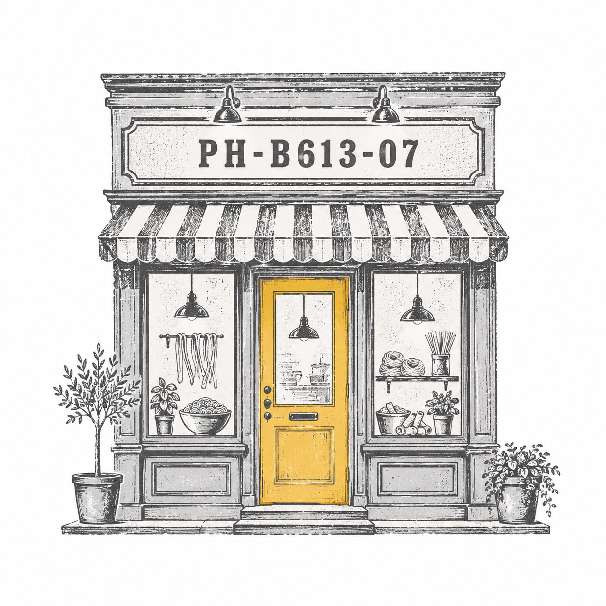

혀로 훈련한 감각이
콘텐츠를 보는 눈이 됐다.
별 이름과 핵심 문장에는 KoPubWorld Batang Pro를 쓴다. 클래식한 식당 간판처럼, 하지만 과하게 장식하지 않는다.
음식별 · LPH-B613-07 · HAM MEDIA 별자리
일본에서, 미국에서, 한국에서.
평생 사람 입으로 들어가
마음에 담기는 일을 했다.
혀로 익힌 감각이
콘텐츠를 보는 눈으로 이어졌다.

음식별의 색은 식탁보, 커피, 문, 접시에서 온다. 노랑은 오래 기억나는 문이고, 초록은 커피 일을 지나온 시간이고, 브라운은 맛과 향을 잡아주는 깊이다.
#f5f0e8따뜻한 식탁, 첫 화면의 공기.
#faf7f2긴 문장과 음식 기억을 읽는 표면.
#00704a오래 일하며 훈련한 커피의 조용한 신호.
#f5c518처음 기억나는 문 색, 작은 강조.
#e8a020시간이 지난 문, 스탬프의 온기.
#3d2b1f커피 원두와 단단한 문장의 깊이.
#b8afa3접시, 선, 오래된 테이블 그림자.
짧은 문장은 바탕체로 세우고, 긴 기억은 Pretendard로 둔다. 음식별의 말은 맛을 평가하지 않고, 그 자리에 남은 감각을 천천히 꺼낸다.
별 이름과 핵심 문장에는 KoPubWorld Batang Pro를 쓴다. 클래식한 식당 간판처럼, 하지만 과하게 장식하지 않는다.
긴 문장은 읽히는 것이 먼저다. 커피, 서비스, 접시, 기억은 차분하게 이어질 때 힘이 난다.
감각은 타고나는 게 아니라
훈련된다.
문장은 음식이 일이었던 시간으로 들어가고, 장면은 테이블과 접시와 커피의 흔적을 보여준다. 지도는 아직 완성된 코스가 아니라, 나중에 다시 짚어볼 자리들이다.
음식별 · 문장
첫 매장 · 기획 · 기억

송도 · 오코노미야키 · 철판

음식별 · 장면


관계의 지도
신포시장, 델라카사 신포점, 스타벅스 리저브처럼 감각이 남은 자리들을 천천히 모읍니다. 완성된 코스보다, 왜 그 자리가 아직 기억나는지가 먼저입니다.
음식별은 카메라별처럼 적게 남기는 별이 아니다. 쌓인 기억이 곧 성격이다. 다만 사진마다 장소 자랑보다 그 자리에 남은 감각을 말해야 한다.
음식별은 많이 먹은 자랑이 아니다. 사람의 입으로 들어가 마음에 남는 일을 오래 하며, 맛과 향과 서비스와 기억을 훈련한 사람의 별이다.
신포시장, 델라카사 신포점, 스타벅스 리저브. 음식별의 지도는 완성된 코스가 아니라, 감각을 길렀던 자리를 하나씩 다시 확인하는 일이다.
감각은 타고나는 게 아니라 훈련된다.
음악을 듣는 귀도,
사물을 보는 눈도,
세상을 그리는 감각도 그렇게 길렀다.
HAM MEDIA의 일도 기술만으로 끝나지 않는다. 맛, 향, 서비스, 타이밍, 배려, 그리고 사람 마음에 무엇이 남는지 알아보는 감각이 함께 움직인다.
이 별은 HAM MEDIA Design MD 방식으로 정리한 별입니다. 좋아하는 것의 감각을 브랜드의 기준으로 바꾸는 실험이기도 합니다.